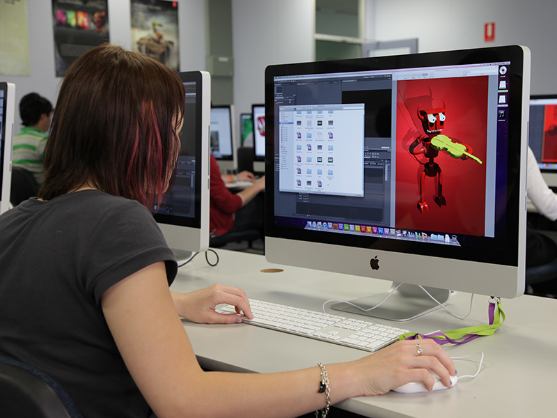

This course has been designed to meet the requirements of applicants who have
completed a relevant HND in Computing by providing a two-year top-up programme leading to an Honours degree.
Develop the personal and transferable skills needed to develop
and manage computer networks and receive comprehensive Cisco CCNA training.
Our Computer Science degree provides you with a balance of knowledge
and skills to design and implement software systems to the high
professional standards demanded by industry.
Learn object-oriented software design and development skills
that are the basis of a career as a professional software
developer who can work effectively in a variety of environments
and product development technologies.
This course has been designed to meet the requirements of applicants
who have completed a relevant HND in Computing by providing a two-year
top-up programme leading to an Honours degree.
This two-year top-up programme, leading to an Honours degree,
has been designed to meet the requirements of applicants who
have completed a relevant HND in Computing.
Our Cyber Security degree provides you with the knowledge and
skills to secure and protect critical information systems to
the high professional standards demanded by industry.
Our Cyber Security degree provides you with the knowledge and
skills to secure and protect critical information systems to
the high professional standards demanded by industry.

Bringing design, production and development together in the world
of Digital Media provides an exciting future for graduates with
this degree.
This course brings design, production and development together
in the world of Digital Media providing an exciting future for
graduates with this degree.